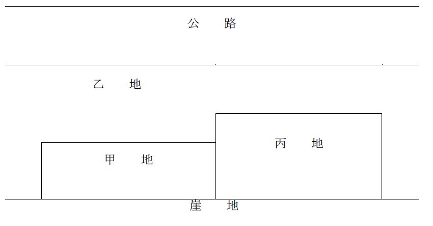

1 地上権は、一筆の土地の一部にも設定することができる。
2 地上権の設定行為で50年より長い存続期間を定めたときは、その地上権の存続期間は50年となる。
3 建物について設定された抵当権が実行されたことにより、法定地上権が成立する場合において、建物の買受人と土地の所有者との間の協議が調わなかったときは、当該法定地上権の存続期間は、20年となる。
4 地上権者が土地の所有者に対し定期に地代を支払わなければならない場合において、設定行為で存続期間を定めていないときは、当該地上権者は、その地上権を放棄することができない。
5 地上権者は、設定行為で存続期間を定めなかったときは、いつでもその権利を放棄して、放棄後に期限の到来する地代の支払義務を免れることができる。
6 地上権者は、存続期間の定めがあるときでも、いつでも地上権を放棄することができる。
7 土地の賃貸人は、特約がなくてもその土地の使用及び収益に必要な修繕をする義務を負うが、地上権を設定した土地の所有者は、特約がない限りその土地の使用及び収益に必要な修繕をする義務を負わない。
8 地上権の目的である土地とその隣地との境界線上に地上権設定後に設けられたブロック塀は、地上権者と隣地の所有者の共有であると推定される。
9 Ａが「電線路及びこれを支持するための鉄塔を施設し、保持すること」を目的として、Ｂからその所有する一筆の甲土地について地上権の設定登記を受けていた。当該地上権が甲土地の全部を対象として設定されたものである場合において、第三者ＤがＡに無断で甲土地の一部に建物を建築したときであっても、当該建物が電線路及び鉄塔にとって支障とならないものであれば、Ａは、Ｄに対して、当該建物の収去を求めることはできない。
10 地上権者は、地上権の目的となっている土地の所有者の承諾を得なければ、その土地を第三者に賃貸することができない。
11 地上権の設定行為において当該地上権の譲渡を禁止する旨の特約がされた場合には、当該特約に違反して地上権者が地上権を第三者に譲渡しても、その第三者は、当該地上権を取得することができない。
12 無償の地上権は、設定することができない。
13 地上権者が引き続き2年以上地代の支払を怠ったときは、その土地の所有者は、地上権の消滅を請求することができる。
14 地上権者が破産手続開始の決定を受けた場合、それまで地代の滞納がなかったときでも、土地所有者は、地上権の消滅を請求することができる。
15 竹木の所有を目的とする地上権の地上権者は、その権利が消滅した時には、土地上に植林した竹木を収去する権利を有するが、土地を原状に復する義務は負わない。
16 竹木の所有を目的とする地上権の地上権者が、その目的である土地に作業用具を保管するための小屋を建てた場合において、当該地上権が消滅したときは、当該地上権者は、その土地の所有者に対し、当該小屋を時価で買い取るよう請求することができる。
17 ＡがＢの所有する甲土地に建物を所有することを目的として地上権の設定を受け、その旨の登記がされている場合には、Ｃが甲土地の地下に区分地上権の設定を受けるためには、Ａの承諾を得なければならない。
18 地上権及び地役権は、50年を超える存続期間を定めて設定することができるのに対し、永小作権は、50年を超える存続期間を定めて設定することができない。
19 Ａが所有する甲土地を二つに分筆してそれぞれをＢとＣに譲渡したところ、Ｂの取得した土地が公道に通じない土地になった場合、Ｂは、公道に至るため、Ｃの取得した土地のみを通らなければならず、隣地を所有するＤとの間で公道に至るための通行地役権を設定することはできない。
20 地役権は、要役地と承役地が隣接していない場合には設定することができない。
21 承役地の上に用水地役権が設定されて登記がされても、重ねて同一の承役地の上に別の用水地役権を設定することができる。
22 地上権は、無償のものとして設定することができるのに対し、永小作権及び地役権は、無償のものとして設定することができない。
23 Ａが所有する甲土地を承役地とし、Ｂが所有する乙土地を要役地とする通行地役権が設定されている場合において、Ｂが地役権の行使のために甲土地に通路を設置したときは、Ａは、その通路を使用することができない。
24 Ａが所有する甲土地を承役地とし、Ｂが所有する乙土地を要役地とする通行地役権が設定され、その登記がされた後、Ｃが乙土地に地上権の設定を受けた場合には、Ｃは、当該通行地役権を行使することができない。
25 Ａ及びＢは、甲土地を共有しているが、隣接する乙土地の所有者Ｃとの間に、甲土地の利用のために乙土地を通行する旨の地役権設定契約を締結した。ＡがＤに対する債務を担保するために甲土地に対する自己の持分に抵当権を設定した場合において、その抵当権が実行されたときは、その持分の買受人Ｅは、Ｃの承諾がなければ、乙土地に対する地役権を行使することができない。
26 Ａ所有の甲土地にＢ所有の乙土地のための地役権が設定され、その後、ＢがＣに乙土地を売却し、その旨の登記がされた場合には、Ｃは、Ａに対し、甲土地の地役権を主張することができる。
27 要役地の所有権とともに地役権が移転した場合、要役地の所有権の移転の登記がされていても、地役権の移転の登記をしていなければ、地役権の移転を受けた者は、これを第三者に対抗することができない。
28 Ａ及びＢは、甲土地を共有しているが、隣接する乙土地の所有者Ｃとの間に、甲土地の利用のために乙土地を通行する旨の地役権設定契約を締結した。地役権設定契約締結に際し、地役権は要役地の所有権とともには移転しない旨の特約をした場合において、Ａが甲土地に対する自己の持分をＤに譲渡したときは、その特約について登記がなくても、Ｃは、Ｄの地役権の行使を拒むことができる。
29 Ａ及びＢは、甲土地を共有しているが、隣接する乙土地の所有者Ｃとの間に、甲土地の利用のために乙土地を通行する旨の地役権設定契約を締結した。Ａが甲土地に対する自己の持分を留保したまま、乙土地についての地役権のみをＤに譲渡した場合であっても、Ｃは、Ｄの地役権の行使を拒むことができない。
30 Ａ所有の甲土地に、Ｂ、Ｃ及びＤが共有する乙土地のための地役権が設定されている場合には、Ｂは、乙土地の自己の持分につき、当該地役権を消滅させることができない。
31 Ａ及びＢは、甲土地を共有しているが、隣接する乙土地の所有者Ｃとの間に、甲土地の利用のために乙土地を通行する旨の地役権設定契約を締結した。Ａが甲土地に対する自己の持分をＣに譲渡した場合には、Ｃの持分についての通行地役権は、混同により消滅する。
32 Ａ所有の甲土地にＢ所有の乙土地上の丙建物からの眺望を確保するための地役権が設定されている場合において、Ｂが乙土地のうち丙建物が存しない部分をＣに譲渡したときは、当該地役権は、Ｃが取得した土地のためにも存続する。
33 要役地が数人の共有に属する場合において、地役権についての消滅時効の期間が満了したが、共有者の一人についてのみ時効の完成猶予または更新が生じたときは、その共有者のみが地役権者となる。
34 土地の共有者の一人が時効によって地役権を取得したときは、他の共有者も、これを取得する。
35 Ａ所有の甲土地にＢ所有の乙土地のための通行地役権が設定され、その後、ＡがＣに甲土地を売却した場合において、その売却の時に、甲土地がＢによって継続的に使用されていることがその位置、形状、構造等の物理的状況から客観的に明らかであり、Ｃがそのことを認識することが可能であったとしても、Ｃが通行地役権が設定されていることを知らなかったときは、Ｂは、地役権の設定の登記がなければ、Ｃに対し、甲土地の通行地役権を主張することができない。
36 Ａが所有する甲土地のために、Ｂが所有する乙土地の一部に通行を目的とする地役権が設定された。ＢがＤに乙土地を譲渡した場合に、その時点で、乙土地がＡによって継続的に通路として使用されていることが客観的に明らかであり、かつ、Ｄが地役権設定の事実を認識していた場合に限り、Ａは、Ｄに対し、登記なくして地役権を対抗することができる。
37 Ａが所有する甲土地のために、Ｂが所有する乙土地の一部に通行を目的とする地役権が設定され、その後、ＢがＤに乙土地を譲渡した。ＡがＤに登記なくして地役権を対抗することができる場合に、Ａは、Ｄに対し、乙土地について地役権を有することの確認を請求することができるが、地役権の設定の登記の手続を請求することまではできない。
38 Ａが、Ｂ所有の甲土地の地中に通された送水管を使用して、外形上認識し得ない形でＡ所有の乙土地への引水を継続して行っていた場合には、Ａは、乙土地のための甲土地の引水地役権を時効によって取得することができない。
39 他人の土地を20年間通路を開設することのないまま通行した隣地の所有者は、その他人の土地について、通行地役権を時効により取得することができる。
40 民法第283条は、「地役権は、継続的に行使され、かつ、外形上認識することができるものに限り、時効によって取得することができる。」と定めているが、通行を目的とする地役権が「継続的に行使され」ていたと認められるには、承役地となる土地の上に通路が開設されることが必要であり、この通路の開設は、要役地の所有者によってされる必要がある。
41 地役権は、一定の範囲において承役地に直接の支配を及ぼす物権であるから、地役権者は、妨害排除請求権、妨害予防請求権及び返還請求権を有する。
42 Ａが所有する甲土地のために、Ｂが所有する乙土地の一部に通行を目的とする地役権が設定された。第三者Ｃが乙土地の同部分に権原なくして自動車を駐車するなどしてＡの通行の妨害を繰り返している場合に、 Ａは、Ｃに対し、地役権に基づく妨害排除請求又は妨害予防請求として、通行妨害行為の禁止を請求することができる。
43 Ａが所有する甲土地にＢが通行地役権を有している場合、Ｃが甲土地にはＢの通行地役権の負担がないものとして占有を継続して甲土地を時効取得したときは、Ｂの通行地役権は消滅する。
44 地役権者がその権利の一部を行使しないときは、その部分のみが時効によって消滅する。
45 Ａが所有する甲土地を承役地とし、Ｂが所有する乙土地を要役地とする通行地役権が設定されたが、その登記がされない間にＣが甲土地に抵当権の設定を受け、その旨の登記がされた場合には、抵当権設定時に、Ｂが甲土地を継続的に通路として使用していることが客観的に明らかであり、Ｃがこれを認識していたとしても、抵当権の実行により当該通行地役権は消滅する。
46 下図のように、甲地が乙地を通らなければ公路に出ることができない位置関係にある場合において、甲地の所有者Ａが乙地の所有者Ｂから通行地役権の設定を受けたときに関する次の記述のうち、誤っているものはどれか。（H11-10）

1 通行地役権の設定契約において、Ａが乙地を通行することができるのは、Ｂがその都度指定する時間に限られる旨を定めることはできない。
2 Ａが甲地の所有権とともに通行地役権をＣに譲渡した場合、Ｃは、甲地の所有権移転の登記とともに地役権移転の登記を経由しなければ、第三者に対し、地役権の移転を対抗することができない。
3 Ａが甲地の持分2分の1をＤに譲渡した場合、Ｄも通行地役権を取得する。
4 Ａが甲地をＥに譲渡した場合、Ａの通行地役権は、特別の定めをしなくてもＥに移転する。
5 Ａは、通行地役権のみを丙地の所有者Ｆに譲渡することはできない。